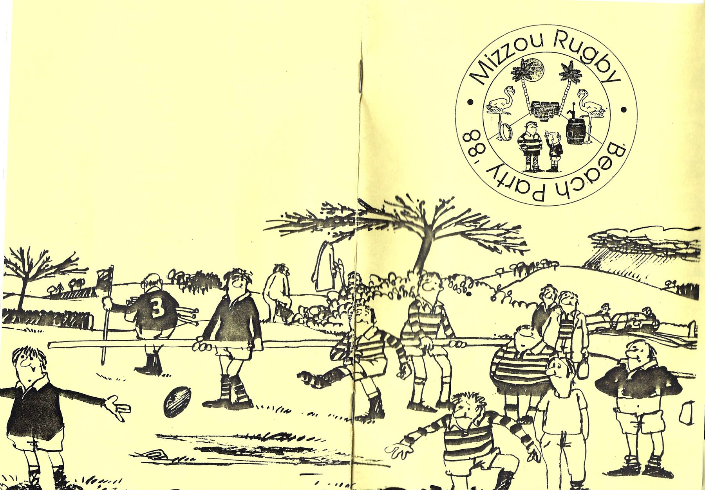
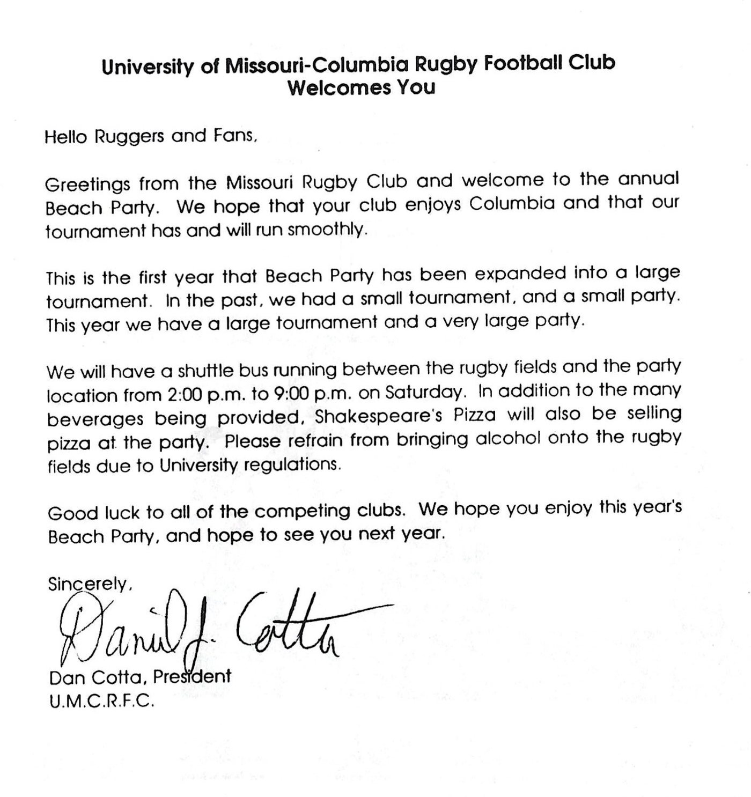
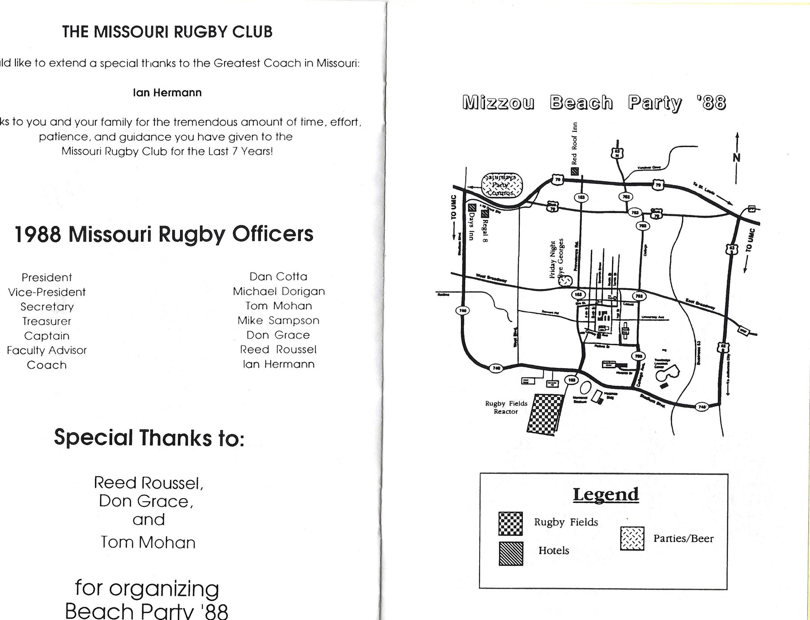
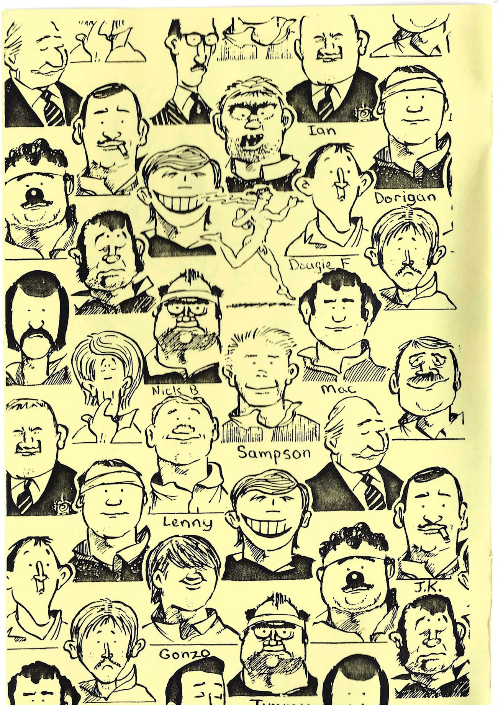
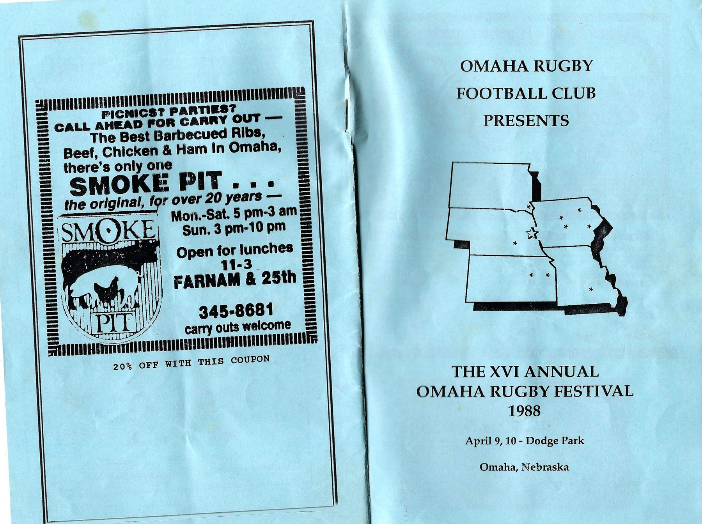
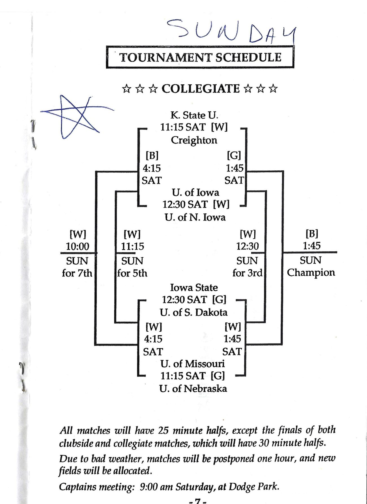

Mizzou Rugby Season Archive
Record unknown · Omaha Rugby Festival, April 9–10, 1988 · Beach Party ’88 hosted at home
Two spring pamphlets are all that survive of this season — but between them they name the club’s officers, place it in a tournament bracket, and record the year Beach Party grew up.
No results from 1987–88 have reached us. What has reached us is a pair of tournament programmes from the spring of 1988, and they carry more about the club than their page count suggests.
The first is the programme for the XVI Annual Omaha Rugby Festival, played April 9 and 10, 1988 at Dodge Park in Omaha, Nebraska. It was a milestone year for the tournament: for the first time the collegiate sides were drawn in a bracket of their own rather than mixed in with the club sides, a change Omaha RFC president Steve Grunberg explained was meant to let the tournament grow to twelve clubs in each half. Missouri went into the eight-team collegiate draw alongside Kansas State, Creighton, Iowa, Northern Iowa, Iowa State, South Dakota and Nebraska, and opened against the University of Nebraska at 11:15 on the Saturday morning on the Green Field. Matches were 25 minutes a half, the two finals 30, and the captains met at nine o’clock Saturday at Dodge Park. The programme is a pre-tournament draw, so it records where Missouri started and nothing about how the weekend ended.
The second is Mizzou’s own programme for Beach Party ’88, and it marks the moment the club’s spring party became a proper tournament. “This is the first year that Beach Party has been expanded into a large tournament,” club president Dan Cotta wrote in his welcome. “In the past, we had a small tournament, and a small party. This year we have a large tournament and a very large party.” Rugby was at Reactor Field, Friday night was at Bye Georges off Providence Road, and a shuttle bus ran between the pitches and the Saturday party site from two in the afternoon until nine at night. Shakespeare’s Pizza sold pizza at the party, and visiting clubs were asked to keep alcohol off the University fields. Reed Roussel, Don Grace and Tom Mohan organised it. The event outlasted them all: the club was still playing Beach Party over the first weekend of May four years later.
The Beach Party programme also prints the club’s full officer slate for 1988 — Dan Cotta as president, Michael Dorigan as vice-president, Tom Mohan as secretary, Mike Sampson as treasurer, Don Grace as captain, Reed Roussel as faculty advisor and Ian Hermann as coach — and gives Hermann a page of his own, thanking “the Greatest Coach in Missouri” for seven years of work. Seven years back from 1988 is 1981, which matches what Hermann told The Maneater in 1983 about how he found the club. The captain is a familiar name too: Don Grace had been the 145-pound scrum half profiled in the 1983–84 student paper, and five years on he was leading the side.
One more thread runs back through the archive. The inside back cover carries an advertisement for Marathon Copier Exchange of Columbia, signed off “Good luck Mizzou Rugby — Greg Wolff, President.” Wolff was the club’s 5-foot-5 fullback and kicker in 1983–84. By 1988 he was running a business on Tenth Street and buying an ad in his old club’s programme.
| Date | Result | Fixture |
|---|---|---|
| Apr 9, 1988 | Not recorded | Nebraska · XVI Omaha Rugby Festival, collegiate bracket · Dodge Park, Omaha NE |
| Apr 9–10, 1988 | Not recorded | Remainder of the Omaha collegiate draw |
| Spring 1988 | Not recorded | Beach Party ’88 · Reactor Field, Columbia — Missouri hosting |
Both programmes are pre-tournament: they print the draw and the arrangements, never the outcome. If you played either weekend and remember how Missouri finished, the form below is the place to tell us.
Alumni submissions, plus the officers named in the Beach Party ’88 programme.
| Name |
|---|
| Jeremy Barnes |
| Dan Cotta (President) |
| Michael Dorigan (Vice-President) |
| Don Grace (Captain) |
| Kevin Kleine |
| Tom Mohan (Secretary) |
| Mike Sampson (Treasurer) |
| Alistair Young |
Coached by Ian Hermann, with Reed Roussel as faculty advisor. This roster comes from alumni submissions and the Beach Party ’88 programme, and is a long way from complete — a club that could host a tournament had far more than eight men. Missing a teammate? Use the form below.
“This is the first year that Beach Party has been expanded into a large tournament. In the past, we had a small tournament, and a small party. This year we have a large tournament and a very large party.”
Dan Cotta, President, U.M.C.R.F.C., welcoming visiting clubs to Columbia, Beach Party ’88 programme
“The Missouri Rugby Club would like to extend a special thanks to the Greatest Coach in Missouri: Ian Hermann. Thanks to you and your family for the tremendous amount of time, effort, patience, and guidance you have given to the Missouri Rugby Club for the Last 7 Years!”
The club’s dedication page to its coach, Beach Party ’88 programme
Have a story from this season? Share it below.
Two spring 1988 tournament programmes, scanned page by page from an alumnus’s collection.






Beach Party ’88 programme, University of Missouri–Columbia Rugby Football Club; XVI Annual Omaha Rugby Festival programme, Omaha Rugby Football Club. Both sent to the Alumni Association by an alumnus. Have more from these weekends? The form below is the quickest way to get it to us.
Roster info, season records, photos, stories — every detail helps.